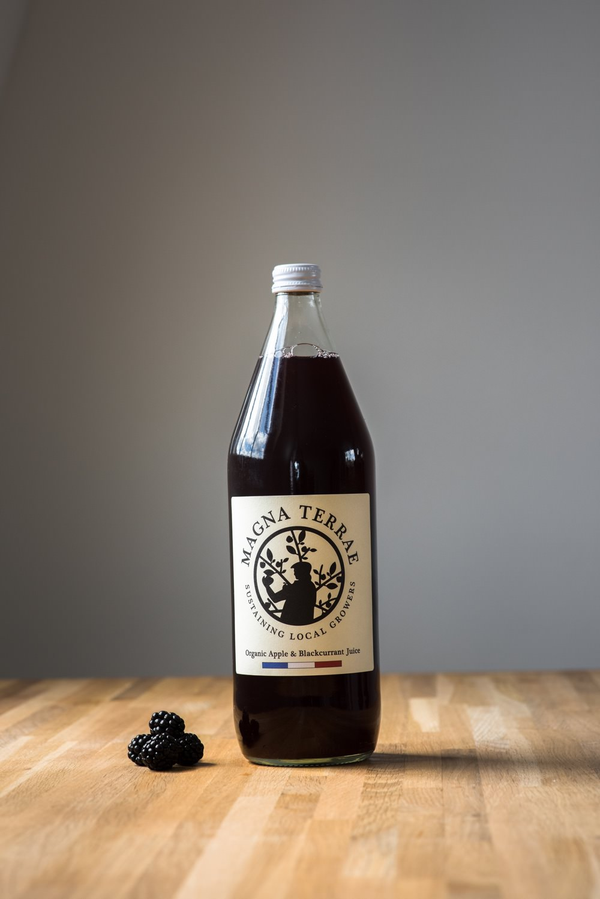

Organic Grape Juice
Light, not too sweet nor too dry, this organic grape juice is just what nature does best. Workshop pressed. 100% Organic.
1L

Organic Pear & Apple Juice
Permaculture grown Pear and Apple Juice. Not too sweet nor too dry. Tastes just beautiful. Farm pressed. 100% Organic.
1L

Artisanal Prune Juice
Thin, light, it tastes beautiful. Grown on the sunny fields of the south of France. Workshop pressed.
75 cl

Organic Apricot Nectar
Thick, from organic soil, it brings you straight in the sunny fields it is growing on. Workshop pressed. 100% Organic.
1L

Organic Prune Nectar
Thick, from organic soil, it brings you straight in the sunny field it is growing on. Workshop pressed. 100% Organic.
1L

Organic Apple & Blackcurrant Juice
Thin, light, fresh and authentic. Beautiful apple juice enliven by blackcurrant. Workshop pressed. 100% Organic.
1L